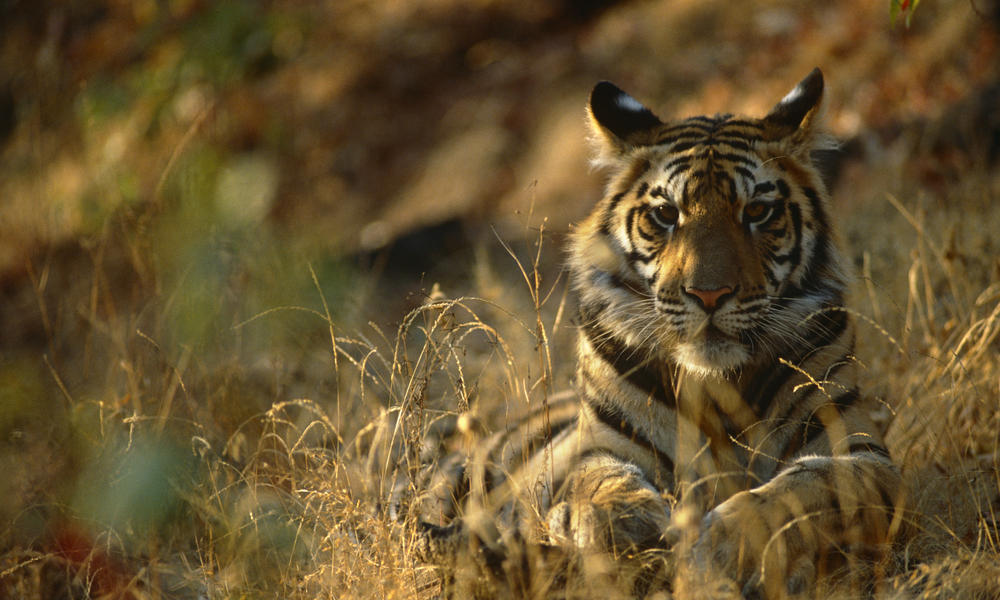

In the southern region of Nepal, the jungles of Chitwan National Park await you with wildlife experiences like no other. Go in search of the majestic Royal Bengal tiger and watch the Greater one-horned rhinoceros roam free, while the great Asiatic elephants move about the jungles in herds. Chitwan National Park is the closest and the ideal place to go for wildlife safari.
Witness real wilderness in the jungles of Chitwan: go for a jeep safari in the depths of the forest or ride a silent canoe and catch wildlife by surprise. Go for a jungle walk accompanied by an experienced guide who knows the jungle like the back of his hand.
Along the marshes and rivers you will find gharial and marsh mugger crocodiles basking in the sun. These reptiles spend a lot of time lying still on the sandy banks giving you plenty of time to watch them.
You can also spend some quality time visiting the elephant and gharial breeding centers, a perfect way to educate your kids about these animals and their life cycle.
Observe local tribal life by visiting a Tharu village, where you will be welcomed inside their traditional mud houses and treated as valued guests.
At the end of the day add to the essence of the ultimate jungle experience by unwinding next to a large campfire, watching the mesmerizing Tharu stick dance and listening to their soothing folk songs.
The Chitwan National Park is Nepal's first national park and lies at the foot of the Mahabharat range in the inner Tarai lowlands of Chitwan. Covering an area of 932 sq. km this is the most well preserved conservation area in all of Asia.
This national park has a fascinating variety of mammals, reptiles and birds and preserves some of the last habitats for endangered species like the Greater one-horned rhinoceros and the Royal Bengal tiger.
The reserve was designated a national park in 1973 and was listed as a UNESCO world Heritage site.